Доступ
Авторизация
Пользовательский интерфейс доступен по адресу http://<ip-сервера>:80
Вас встретит страница Входа в аккаунт системы под одним из пользователей. Есть 3 вида пользователей:
Гостевой режим не требует авторизации. Уточните пароль от нужной учётной записи у администратора .
Механик - имеет полный доступ ко всем аспектам системы;
Диспетчер - имеет доступ ко всем страницам кроме Отчётов, может добавлять и изменять данные;
Гость - имеет в доступе только Главную и страницу Общего состояния конвейеров, не может изменять данные.
Выход
Смена пароля
Так же вы можете сменить пароль от аккаунта. Откройте боковое меню и выберите пункт Сменить пароль. В
открывшейся форме заполните все поля.
Чтобы выйти из учётной записи, откройте боковое меню и выберите пункт Сменить пользователя. Вас перекинет
обратно на страницу Входа в аккаунт.
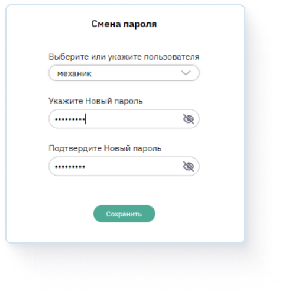
В системе есть 4 страницы: Общее состояние конвейеров, Главная, Аналитика и Отчёты. На некоторых из них
можно выбрать конвейер.
Перед началом работы выберите нужный вам конвейер если их несколько.
В
списке конвейеров можно: добавлять новые, удалять и редактировать существующие.
Дашборд - схематичное изображение всей ленты конвейера. На нем схематично изображено
расположение:
Стыков;
Участков;
Камер.
Кликните по дашборду чтобы увидеть фото сегмента
и информацию по нему. Фото выбранного сегмента отобразится в Состоянии стыка/участка/дефекта.
Помимо камер на дашборд можно ещё добавить расположение других меток, таких как ложный сброс, натяжная
секция и т.д., а так же удалять и изменять данные об уже существующих метках.
Для этого нужно
войти в режим редактирования меток. Нажмите на блок с иконкой ручки в вверхнем левом углу дашборда, экран
всё потемнеет за исключением самого дашборда. Нажмите ещё раз на ручку чтобы Добавить новую метку или
Выйти из режима.
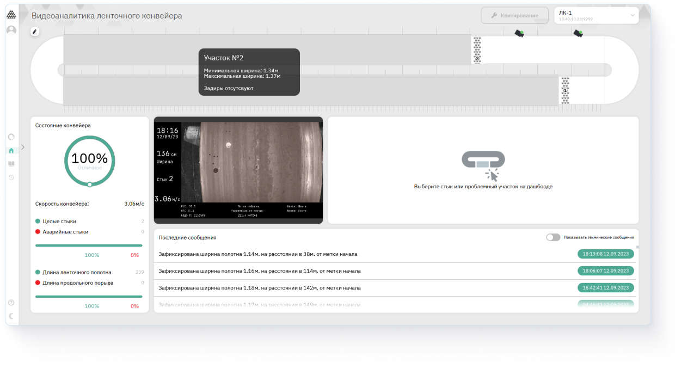
Нажмите на пункт Добавить новую метку, теперь при перемещении мышки на дашборде появляется знак +. Нажмите
на него в любом приблизительном подходящем для размещения метки месте. Откроется модальное окно в котором
можно выбрать тип метки и отредактировать точное её расположение.
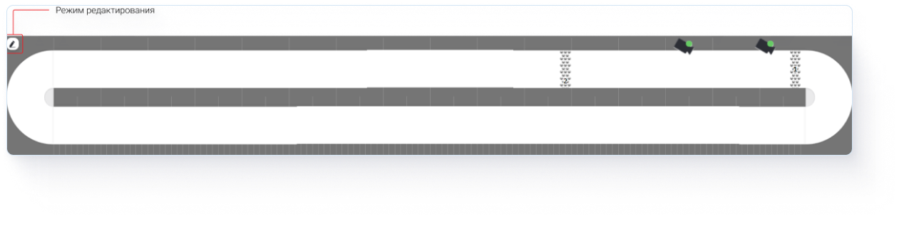
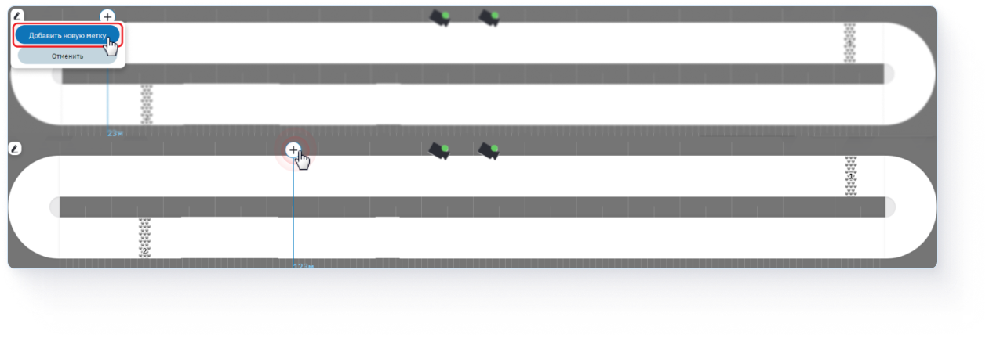
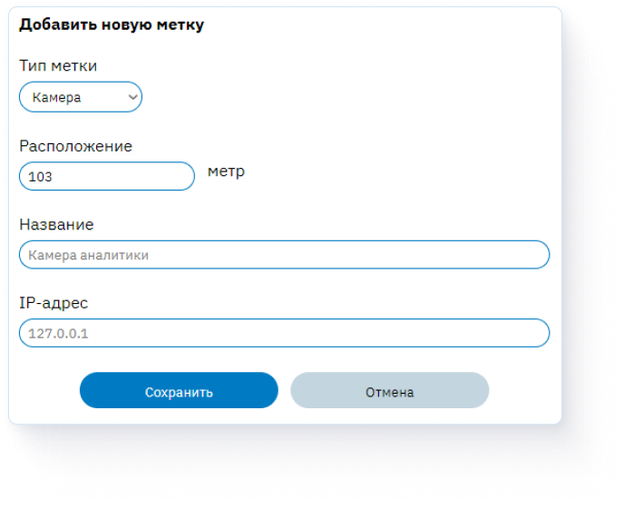
Аналитика
Страница содержит в себе графики состояния стыков/участков и фото стыков конвейера за всё время, каждый из
них можно сравнить по времени, например, до появления аварии и после.
По умолчанию, все графики
участков показываются одновременно, в правом меню можно выбрать один или несколько участков. Изначальный
временной период - последняя неделя. Изменить его можно в верхнем правом поле.
Чтобы
сравнить стык по времени:
Выберите стык;
Выберите интервал кадров (дат);
Перематывайте с
помощью ползунков дату и время кадров за выбранный период, серым цветом выделен временной промежуток.
Дашборд
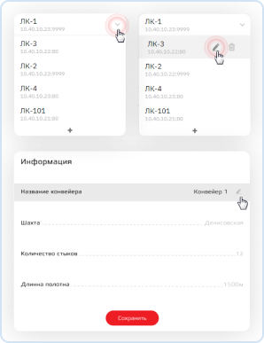
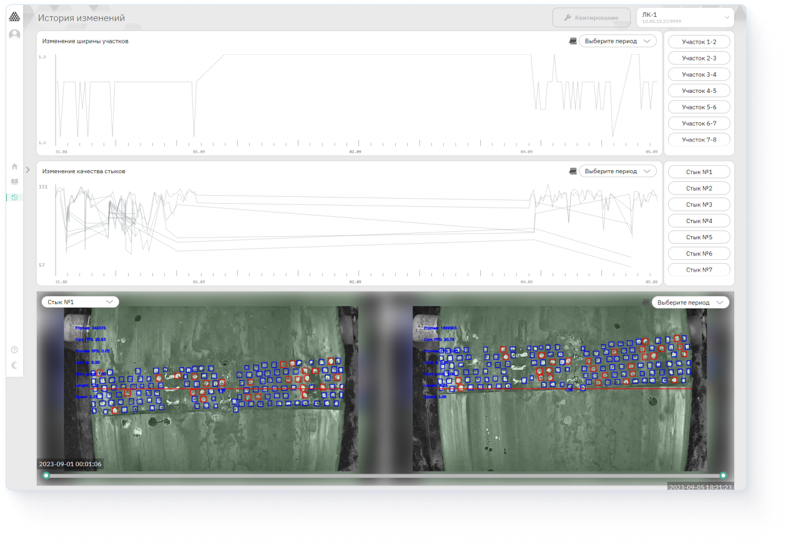
В случае аварии или появления дефекта на конвейере система выдаёт всплывающее уведомление с информацией по
ней и фото.
Все зафиксированные аварии с информацией и фото можно посмотреть на Главной странице в
Последних сообщениях. При появлении серьёзной аварии будет доступна кнопка остановки конвейера -
Квитирование.
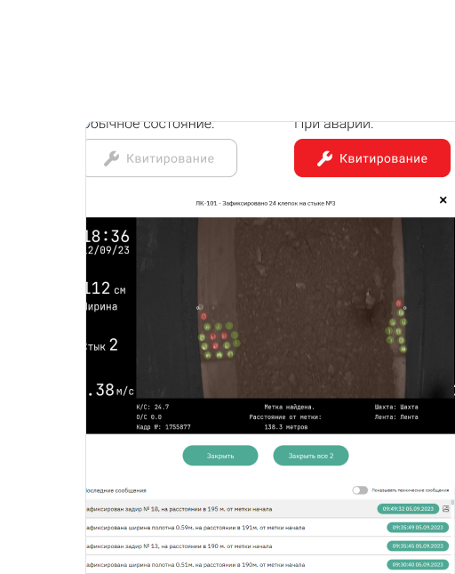
Все уведомления об авариях, зафиксированных системой можно получать на почту.
Откройте боковое
меню и нажмите на Email-рассылку, открывается всплывающее окно. Здесь отображен список всех email-адресов на
рассылку уведомлений и поля ввода данных для добавления новых.
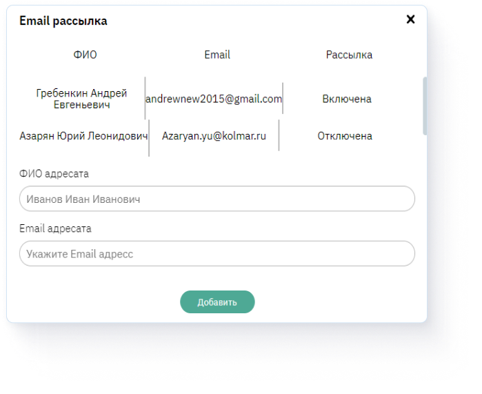
При входе в систему вас встретит страница, которая отображает всю необходимую общую информацию о состоянии
каждого конвейера.
Состоит из:
Круговая диаграмма с двумя состояниями: Отличное и Аварийное;
Кнопка
Перейти;
Скорость и длинна конвейера;
Список дефектов;
Состояние стыков;
График скорости
конвейера за последнее время.
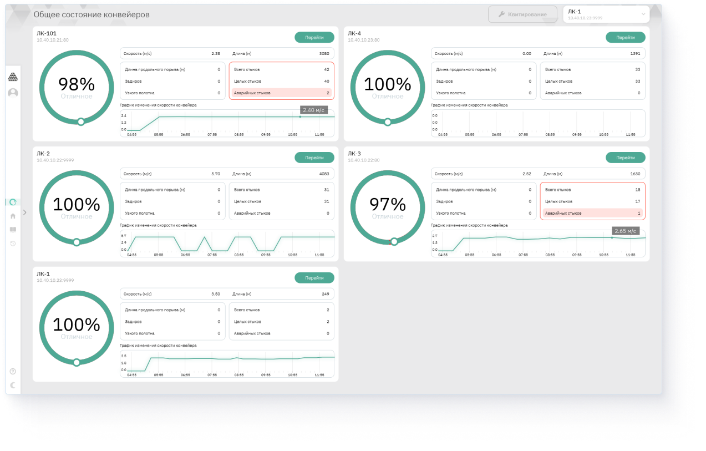
По нажатию на Основные настройки открывается всплывающее окно. Все данные можно изменить и сохранить
изменения.
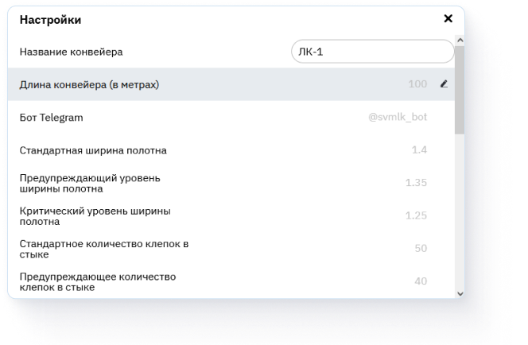 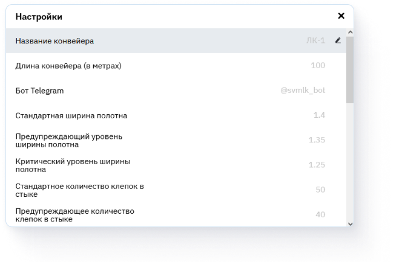
Страница Отчёта отображает список всех записей о проведённых работах по стыкам, отображая кто
работал, кто записал, дату работы, дату записи и тип работы.
Таблица имеет три основные вкладки:
Последние работы по стыкам, Все работы по стыкам, Работы по стыку, а так же кнопки Создания новой записи и
Экспорт в CSV.
Чтобы изменить или удалить запись наведите на строку записи
курсор и нажмите на иконку мусорки или ручки.
Нажмите на кнопку в правом верхнем углу чтобы Создать новую запись. Откроется модальное окно. Выберите
один из вариантов того, какой тип записи создать. После выбора заполните все поля и Сохраните. Запись
появится первой в списке Последних работ по стыкам.
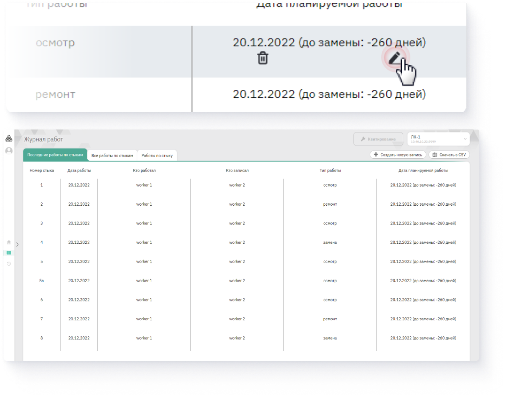
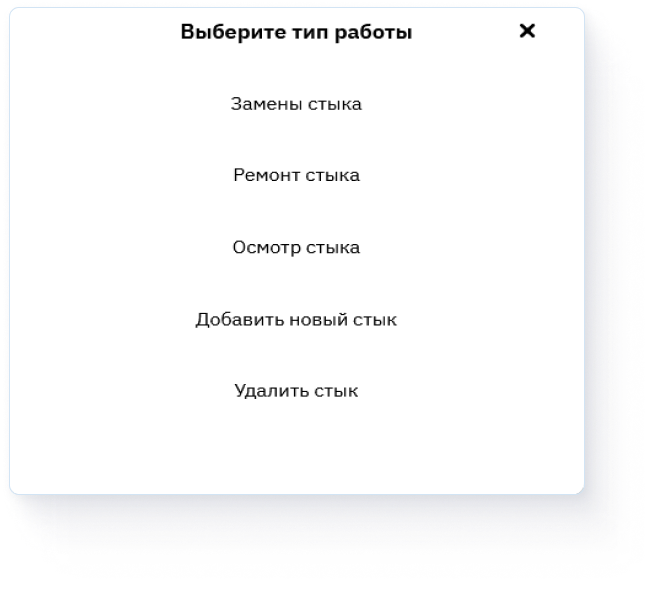
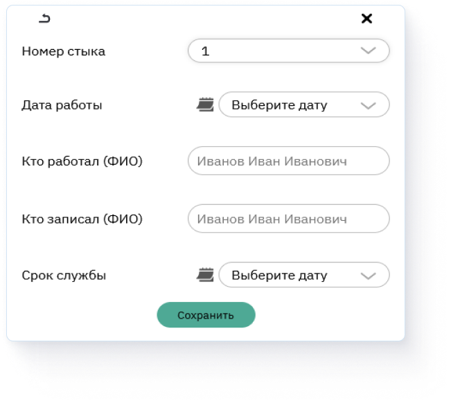